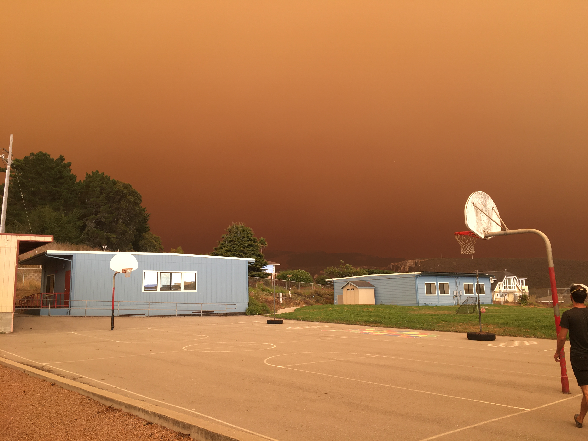
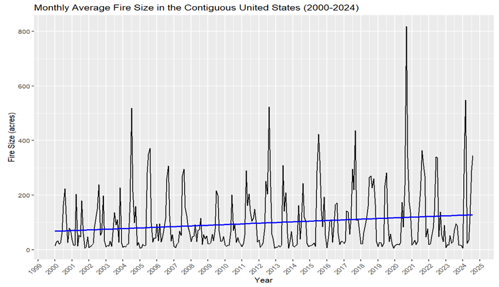

Introduction
Increasing Wildfires: What does the data tell us?
Wildfires in the United States, particularly the west, are a becoming common occurrence. They continue to become more devastating every year wiping out ecosystems, damaging human communities, and emitting millions of metric tons of smoke.
In this interactive website, we will examine the causes, both human and environmental, for this increase as well its impact on society, climate, and ecosystems. This analysis will be approached using visual data science so we can see these trends for ourselves!
I became particularly interested in wildfires after a devastating fire swept through my hometown of Santa Cruz, California in 2020. This ended up being the largest fire year in California’s modern recorded history with over 4% of the entire state’s land area (4,304,379 acres) burning that year.

Wildfires are increasing in size, frequency, and severity.
In the past 50 years, the extreme increase in wildfires in the western US has become highly concerning for local human and environmental communities. There are 4 key trends with this increase:
Fires are increasing in number each year
Fires are becoming more severe (faster spreading, hotter flame temperatures, more erratic behavior)
The same areas are burning over and over
Fires are getting bigger
Below is a graph that shows the average size of all wildfires each month in the contiguous United States (lower 48) from 2000 - 2023. Along with showing this size increase over time (represented by the blue trend line), we can also see the seasonality of wildfires. Larger fires tend to occur in the summer whereas smaller fires occur in the winter.

In order to analyze the reasons for this increase, we need to understand where and how these wildfires are happening. Looking at characteristics of recent US wildfires wildfires will begin to give us a sense of the scope of this modern natural disaster.
Where are the wildfires in the US?
The interactive visualization below shows all wildfires reported to the Federal Emergency Management Agency (FEMA) from 2014-2017. Toggle with the sliders and drop downs to explore different traits of these wildfires yourself and click on an individual point to see fire details.
We can see many trends from this map. For example, medium and large fires are most common in the western United States. Wildfire started by lightning appear to be more clustered in mountainous regions of the west. We can also see that fires which impact more buildings tend to be costlier. We will explore some of the reasons for these trends in the upcoming pages.